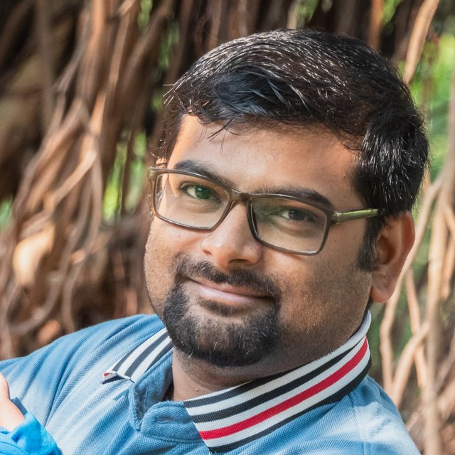
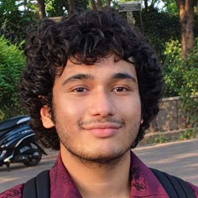
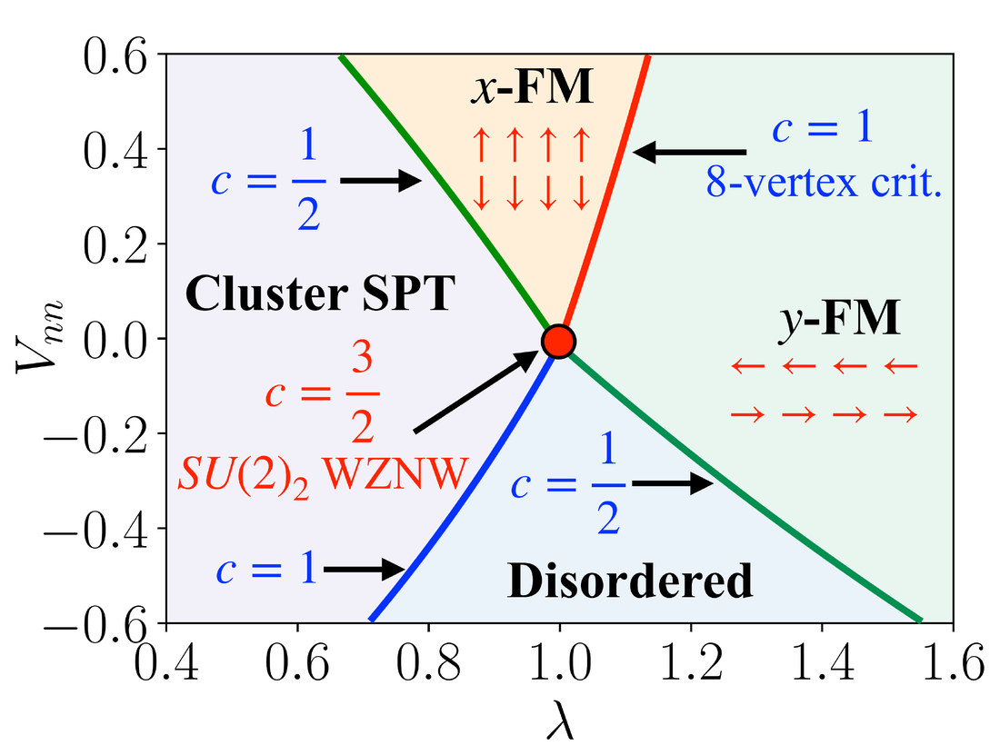
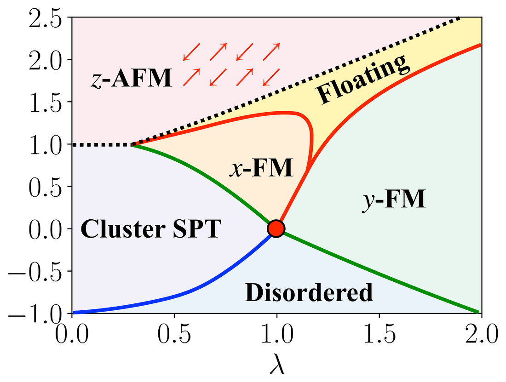
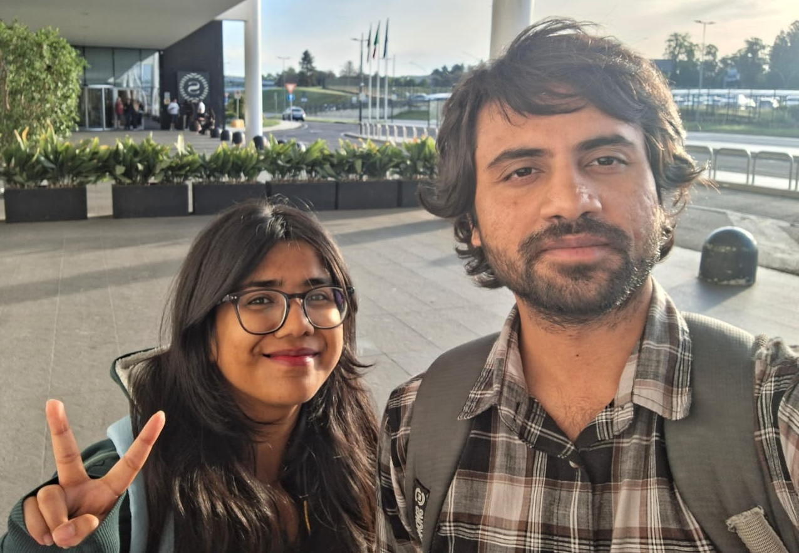
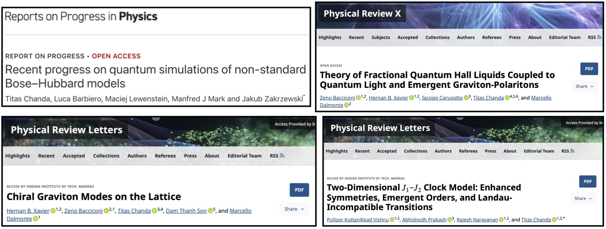

Department of Physics
IIT Madras
Hello there
I am Titas Chanda, a theoretical physicist and an Assistant Professor in the Department of Physics at the Indian Institute of Technology Madras (IIT Madras). Here I lead the Synthetic Quantum Systems (SQS) research group, and I am also affiliated with the Center for Quantum Information, Communication and Computing (CQuICC).
My Journey From Siliguri to Chennai, by way of Kolkata, Prayagraj, Kraków, Trieste and Indore
I grew up in Siliguri, a picturesque city in the foothills of the Himalayas in West Bengal, where I completed my schooling. I then moved to Kolkata to study physics at Jadavpur University, and afterwards joined the Harish-Chandra Research Institute (HRI) in Prayagraj for an Integrated M.Sc.-Ph.D. It was at HRI, under the supervision of Prof. Aditi Sen(De), that I began my research in quantum information theory.
My academic journey then took me to Europe, first as a postdoctoral researcher at Jagiellonian University in Kraków, Poland, and later at the Abdus Salam International Centre for Theoretical Physics (ICTP) in Trieste, Italy. During these years, my research interests gradually expanded from quantum information theory to quantum many-body physics and condensed matter theory.
In 2023, after nearly five years abroad, I answered the call of Swades and returned to India to join the Indian Institute of Technology Indore as an Assistant Professor. A year later, I moved to the Indian Institute of Technology Madras, where I now lead the Synthetic Quantum Systems (SQS) research group in the Department of Physics.
My research sits at the crossroads of condensed matter theory, quantum many-body physics, quantum information science and quantum simulation. At its heart is a basic question: how do interactions among many quantum particles give rise to collective behavior that no single particle shows on its own? To address it, I combine analytical methods from quantum field theory, large-scale numerical simulations based mainly on tensor networks, and concepts from quantum information theory.
Much of our work is motivated by synthetic quantum systems, such as ultracold atoms in optical lattices, Rydberg atom arrays, trapped ions and cavity QED setups. In these platforms, exotic many-body Hamiltonians can be engineered and probed in the laboratory, opening a new window onto fundamental questions in condensed matter physics and beyond.
You can find more about my work on the Research page.
- Strongly correlated quantum systems
- Tensor network methods
- Critical phenomena
- Lattice gauge theories
- Topological phases of matter
- Out-of-equilibrium dynamics
- Quantum simulation
- Assistant ProfessorIIT Madras, 2024 to present
- Assistant ProfessorIIT Indore, 2023 to 2024
- Postdoctoral FellowICTP, Trieste, 2021 to 2023
- Postdoctoral FellowJagiellonian University, Kraków, 2018 to 2021
- Ph.D. in PhysicsHRI, Prayagraj, 2018
- M.Sc. in PhysicsHRI, Prayagraj, 2014
- B.Sc. (Honors) in PhysicsJadavpur University, Kolkata, 2012
Honors and Awards Prizes, fellowships and academic distinctions
- 2025Awarded the ICTP Prize for contributions to quantum many-body physics, along with Dr. Sthitadhi Roy, ICTS-TIFR, Bengaluru, India.
- 2025Awarded the Prime Minister’s Early Career Research Grant (PMECRG) by the Anusandhan National Research Foundation (ANRF), Govt. of India.Project valuation: INR 5,396,642/-
- 2021Selected for the ICTP/UNESCO Research Fellowship Agreement (RFA).
- 2018Selected for a postdoctoral position under the QuantERA QTFLAG project.
- 2018Awarded the HRI-Infosys Prize by the Harish-Chandra Research Institute, Prayagraj, India, for Excellent research in Physics.
- 2014Ranked 1st in the Master of Science (M.Sc.) program at the Harish-Chandra Research Institute.
- 2012Ranked 5th in the Bachelor of Science (B.Sc.) program at Jadavpur University.
- 2009Ranked 1st in the Darjeeling district and 6th in West Bengal in the Higher Secondary Examination (WBCHSE board).
- 2007Ranked 3rd in the Darjeeling district and within the top 20 in West Bengal in the Madhyamik (Secondary) Examination (WBBSE board).
Reviewer Activities Physical Review, SciPost and other journals
I am a regular referee for the following international scientific journals:
My recent reviews are recorded on Web of Science.
Openings. The SQS group is always looking for motivated Ph.D. students and postdocs. Please see the Group page for details on how to apply.
Recent News
October 2026
Welcome, Rajashri and Aditya!

We are delighted to welcome two new members to the SQS group.
Rajashri Parida joined us in September 2026 as a postdoctoral fellow, supported by an ANRF National Post-Doctoral Fellowship. She completed her undergraduate studies at Utkal University and her master’s at the Central University of Punjab, and then obtained her Ph.D. from NISER Bhubaneswar under the supervision of Dr. Tapan Mishra. Her research focuses on the collective properties of interacting quantum gases, with a particular interest in developing and applying tensor network methods to strongly correlated many-body systems. Outside research, she enjoys singing and chatting with her loved ones, and she is always keen to learn something new, in physics and beyond.
Aditya Sharma joined us in October 2026 as a Project Associate. He studied Mechanical Engineering at BITS Pilani, Goa Campus, with a minor in Physics. For his undergraduate thesis, he worked with tensor network methods for two-dimensional systems, in particular iPEPS and CTMRG. His interests span quantum many-body physics, tensor networks and quantum information. Outside research, he enjoys listening to music, singing and reading philosophy, and he is an animal lover who cares about animal welfare.
We are excited to have them on board and wish them every success at IIT Madras.
August 26, 2026
Sourabh’s first paper is on arXiv
Sourabh’s first paper, Critical bifurcation and deconfined quantum criticality in an interacting cluster Ising chain, is now available as arXiv:2608.24248. As it happens, it is also my 50th arXiv entry.


The physics. The free-fermion cluster Ising chain hosts a critical point described by the SU(2) level-2 Wess-Zumino-Novikov-Witten theory, which can be viewed as a triplet of Majorana fermions with an exact O(3) symmetry. An interaction reduces this O(3) to its cyclic subgroup \(C_3\) and splits the triplet into a singlet and a doublet, whose gaps close independently. As a result, the critical point bifurcates into two critical lines. One of them separates two ferromagnets that, according to Landau theory, cannot be connected by a continuous transition. This deconfined critical line belongs to the eight-vertex weak universality class.
July 2026
Welcome, Tamal!
We are delighted to welcome Tamal Kundu to the SQS group as a Ph.D. student. Tamal completed his bachelor’s degree in physics at Jadavpur University in 2024 and his master’s degree at IIT Guwahati in 2026. Outside academics, he enjoys reading and playing football, and he is an avid supporter of FC Barcelona. We are excited to have him on board and wish him every success in his Ph.D. journey at IIT Madras.
June 2026
A new website
Welcome to my new website! It replaces my earlier Google Sites page and gives me more flexibility. I will keep it updated with research highlights, publications, teaching material and news from the group.
April 2026
Sourabh and Neelanjana at ICTP, Trieste

Sourabh and Neelanjana Dey, Ph.D. students in the SQS group, attended the ICTP-IBM School on Quantum Computing and Simulation at the Abdus Salam International Centre for Theoretical Physics (ICTP) in Trieste, Italy, from April 20 to 30, 2026. Over two weeks, the school offered lecture courses by leading researchers on quantum computing, quantum simulation and related topics.
January 2026
2025 in review
2025 was an exciting year for our research, with publications in several leading journals, including Reports on Progress in Physics, Physical Review X and Physical Review Letters.
- A review article in Reports on Progress in Physics surveys recent theoretical and experimental advances in non-standard Bose-Hubbard models, with particular emphasis on long-range interactions and quantum simulation with ultracold atoms.
- A paper in Physical Review X develops a theoretical framework for fractional quantum Hall states coupled to quantum light, revealing cavity-induced topological phenomena such as graviton-polaritons and light-matter entanglement.
- A paper in Physical Review Letters demonstrates that chiral graviton modes survive in lattice fractional quantum Hall systems, opening a realistic route to observing them in quantum simulation experiments.
- Another paper in Physical Review Letters uncovers emergent phases and unconventional critical phenomena in frustrated clock models, revealing a new mechanism by which forbidden discrete symmetries emerge at long wavelengths.
